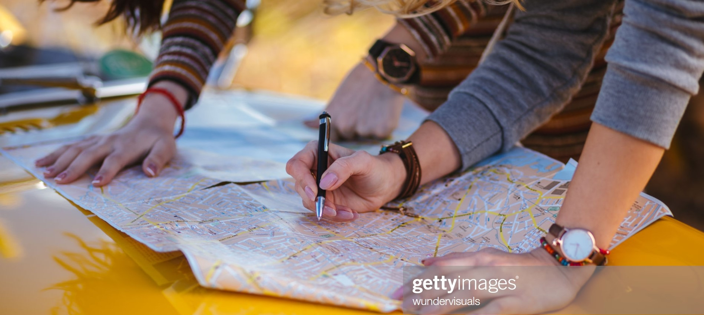

|  | VISITER.COM BIENVENUE |
|---|
La Havane est la capitale de Cuba. Son centre historique datant du XVIe siècle, la Habana Vieja, se caractérise par une architecture coloniale espagnole, avec notamment le Castillo de la Real Fuerza, un musée forteresse maritime. L'El Capitolio est un monument typique des années 20. La Habana Vieja compte également la cathédrale baroque de la Vierge Marie de l'Immaculée Conception (ou Catedral San Cristóbal) et la Plaza Vieja, dont les bâtiments témoignent de la variété architecturale de la ville.
Les vieilles voitures américaines sillonent les rues de la ville tandis que des groupes de rumba jouent dans la ruelle colorée Callejon de Hamel.Des airs de salsa s'échappent des discothèques et des spectales de cabaret sont données au célèbre Tropicana.
A centro Habana,le musée national des Beaux-Arts de Cuba expose des oeuvres d'art cubaines,le superbe Grand Theatre propose ballets et pièces de theatre,et le musée de la Révolution occupe l'ancien palais présidentiel.Au bord de l'eau se trouvent la promenade du Malecon et les plages de l'Est (Playas del Este).
La Finca Vigia,l'ancienne maison (devenue musée) de l'écrivain Ernest Hemingway,est installée à San Francisco de Paula,à l'Est de La Havane.